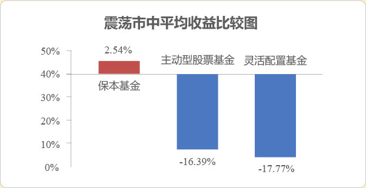

CPPI策略，通过设置防守“安全垫”，确保投资者到期（保本期3年）的本金安全。通过动态调整风险倍数，实现熊市保本、牛市进取的目标。
实力担保机构——深圳市高新投集团有限公司，为本基金提供不可撤销的连带责任保证。
熊市中保本基金相比同期主动股票型和灵活配置型基金回撤要小。
数据来源：wind，时间区间 2015年6月15日——2015年8月31日，同期沪深300指数下跌36.90%，此区间认定为熊市
历史数据仅供参考，不代表保本基金的风险收益特征
保本基金一般为混合型基金，在累计安全垫的基础上，保本基金将部分资产进行权益投资，力争获取股市收益！
震荡市中，保本基金能实现正收益，而同期普通股票型和灵活配置型基金平均收益为负。
数据来源：wind，时间区间 2012年1月1日——2013年12月31日，同期沪深300指数下上涨1.36%，振幅达到54.62%，认定此区间为震荡市。
历史数据仅供参考，不代表保本基金的风险收益特征
汇添富基金固定收益投资团队平均从业年限超过13年，实战经验丰富，业务资源广泛。目前已形成了梯队清晰、分工合理的专业团队，团队高度稳定。
汇添富在业内以“选股专家”著称，业绩傲人，取得了多项由权威机构颁发的奖项。以2015年业绩为例，旗下偏股型基金全年平均涨幅达到67.47%，不仅在大型基金公司中位居第一，更较全市场偏股型基金平均涨幅超出近三分之一！
数据来源：银河证券进研究中心，截止日期：2015年12月31日
大型基金公司指在中国基金业协会2015年12月底公募基金规模排名前20名的基金公司。
目标收益率24%； 连续15工作日达到或超过目标收益率提前结束保本周期，及时锁定前期收益。
北京首创融资担保有限公司提供不可撤销的连带责任担保，本保本基金对符合保本条件投资者的保障有：基金份额持有人认购并持有到期的基金份额的净认购金额+认购费用+募集期间的利息收入。
先通过债券等安全资产构建安全垫； 通过风险乘数，在安全资产上建立相应的风险资产头寸。
1、保本基金杠杆率可达 200%，打新更具优势；
2、股票投资比例 0-40%；
3、顺应市场节奏优选个股，力求增厚收益。
广发基金2015年债券投资主动管理能力位列行业前十大基金公司第1，2015年权益类投资主动管理能力位列行业前十大基金公司第6，荣获“2015最受尊敬基金公司”。
债券部分由金牛基金经理：任爽操刀，共同管理的广发纯债2015年净值增长率位列同类基金第5；共同管理的广发活期宝 2015 年净值增长率位列同类基金第 2。
权益类基金经理：李巍，从业年限超过10年，经验丰富，管理基金业绩表现突出，选股能力优秀，善于挖掘个股。